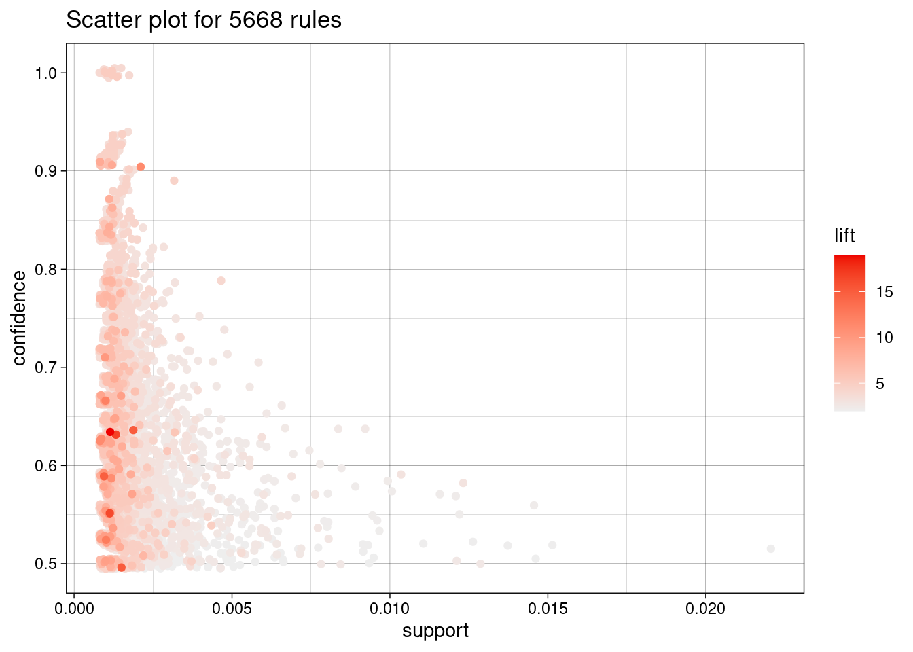
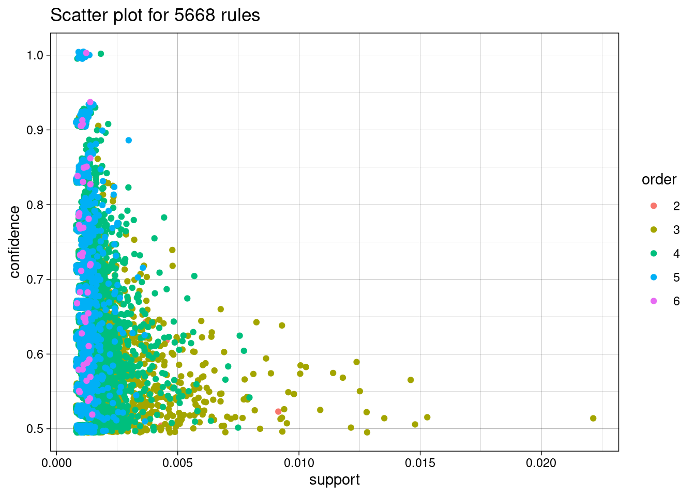
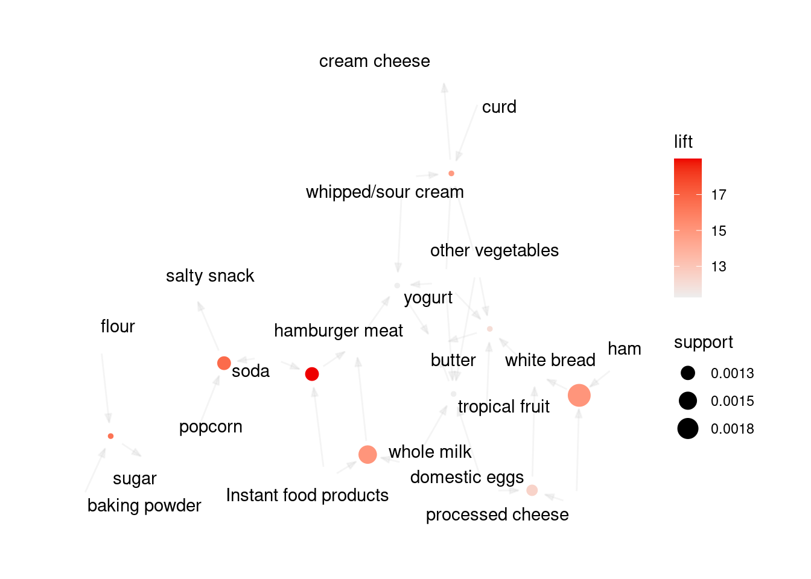

Las reglas de asociación son una técnica fundamental en ML que se utiliza para descubrir patrones significativos y relaciones ocultas en conjuntos de datos, especialmente aquellos que involucran transacciones o cestas de la compra. Estas reglas desempeñan un papel crucial en la extracción de conocimiento de datos, y su aplicación abarca una amplia variedad de dominios.
Descubriendo Patrones Relevantes: Las reglas de asociación son un enfoque de ML diseñado para identificar patrones de co-ocurrencia entre elementos o características en conjuntos de datos. Estas reglas permiten revelar conexiones interesantes y relaciones significativas que a menudo pasan desapercibidas a simple vista. Las reglas de asociación sirven para descrubrir patrones de ocurrencia, no sirven para comprobar ideas o hipótesis sobre los datos. Los escenarios ideales para su aplicación incluyen, pero no se limitan a, datos de transacciones de compras de clientes, registros de usuarios en línea y registros de interacciones de productos.
Nota
Supongamos que disponemos de un conjunto de datos de compras de clientes en una tienda en línea. Los datos pueden verse de la siguiente manera:
Transacción
Productos comprados
1
Pan, Leche, Huevos
2
Leche, Queso, Yogur
3
Pan, Leche, Mantequilla
4
Pan, Huevos
5
Leche, Huevos, Queso
6
Huevos, Queso, Yogur
7
Mantequilla, Chocolate
8
Pan, Leche, Chocolate
En este conjunto de datos, cada fila representa una transacción y los productos comprados en esa transacción. Las reglas de asociación se utilizan para descubrir patrones de co-ocurrencia entre productos. Por ejemplo, podríamos encontrar las siguientes reglas de asociación:
Si un cliente compra Pan y Leche, entonces también compra Huevos. Si un cliente compra Leche y Queso, entonces también compra Yogur.
La Estructura de “Si… Entonces…”: Como acabas de ver en el ejemplo, estas reglas de asociación se expresan típicamente en una estructura condicional “si… entonces…”, donde se establece una relación entre los elementos o características. Esta estructura es fácilmente interpretable y ofrece una base sólida para la toma de decisiones y la generación de recomendaciones. La interpretación de estas reglas \(X\Rightarrow Y\) se hace desde un punto de vista de frecuencia, esto es, cuando en un conjunto aparece el conjunto de items \(X\) entonces también suele aparecer o es probable que aparezca el item \(Y\):
\(X\) se llama antecedente o left-hand-side (LHS)
\(Y\) se llama consecuente o right-hand-side (RHS)
Importante
A lo largo del libro, hemos utilizado \(X\) para referirnos a las variables explicativas e \(Y\) para referirnos al target. Sin embargo, en este capítulo ambas hacen referencias a transacciones (\(X\) el antecedente e \(Y\) el consecuente) y tomarán valores del estilo \(X\) = {leche, huevos, chocolate}, \(Y\) = {mantequilla}
Mediciones de Fuerza de Asociación: Para cuantificar la importancia de estas reglas, se utilizan tres métricas clave: el soporte (support), la confianza (confidence) y lift:
El soporte mide la frecuencia con la que aparece un conjunto de items \(X\) en el conjunto de datos, lo que indica su relevancia en términos de ocurrencia
\[soporte(X) = \frac{\text{Transacciones que contienen }X}{\text{número total de transacciones}}\]
La confianza, por otro lado, indica cómo de probable es que ocurra el item \(Y\) dado que ocurre \(X\). Esto es, es la proporción de transacciones en las que aparece \(Y\) en el total de transacciones en las que aparece \(X\):
\[
Confianza(\{X \Rightarrow Y\}) = \frac{soporte(X \cup Y)}{soporte(X)} = \frac{\text{Transacciones que contienen a }X \text{ y a }Y}{\text{Transacciones que contienen }X}
\]
Lift mide la fuerza de la asociación entre \(X\) e \(Y\) teniendo en cuenta la confianza de la regla y la “popularidad” del consecuente \(Y\). Si el consecuente \(Y\) aparece con mucha frecuencia en el conjunto de datos, puede que la regla de asociación se deba simplemente a su popularidad y no a una asociación real. Se calcula como
Es decir, lift compara la probabilidad de ocurrencia simultánea de \(X\) e \(Y\) con la probabilidad de que ambos ocurran si fueran independientes. Así, valores próximos a 1 indican que no hay asociación entre \(X\) e \(Y\), valores mayores que 1 implican que es probable que se adquiera el item \(Y\) si se ha adquirido \(X\) y valores menores que 1 implican que no es probable que suceda \(Y\) si ha sucedido \(X\).
Estas métricas ayudan a determinar la solidez y la utilidad de las reglas de asociación descubiertas.
Veamos un ejemplo con los datos de la tabla de arriba:
El soporte de \(X\)={pan} es 4/8=1/2 dado que aparece en la mitad de las transacciones. El soporte de \(X\)={leche, queso} es 2/8=1/4.
La confianza de \(X \Rightarrow Y\) siendo \(X\)={pan} e \(Y\)={leche} es: \[
Confianza(\{X \Rightarrow Y\}) = \frac{3/8}{1/2}=\frac{3}{4}=0.75
\]
El lift de la regla es: \[
Lift(\{X \Rightarrow Y\}) = \frac{3/4}{5/8} = 1.2
\]
Aplicaciones en Diversos Campos: Las reglas de asociación tienen una amplia gama de aplicaciones en el mundo real. Desde el ámbito del comercio electrónico, donde se utilizan para generar recomendaciones de productos personalizadas, hasta la investigación de mercado, donde ayudan a identificar tendencias y patrones de consumo. También se aplican en la optimización de la colocación de productos en tiendas y la detección de anomalías en datos, como fraudes o comportamientos inusuales.
Algoritmos Especializados: Para extraer reglas de asociación, se utilizan algoritmos especializados como Apriori y FP-Growth. Estos algoritmos son capaces de manejar grandes conjuntos de datos y descubrir patrones complejos de manera eficiente.
8.1 Reglas de asociación en R
Vamos a emplear un ejemplo en R. El conjunto de datos Groceries contiene datos de ventas de una tienda de comestibles con \(9835\) transacciones y \(169\) artículos (grupos de productos).
library(arulesViz)
Loading required package: arules
Loading required package: Matrix
Attaching package: 'arules'
The following objects are masked from 'package:base':
abbreviate, write
# Limitamos el número de decimales en la salidaoptions(digits =2)# reproducibleset.seed(1234)data("Groceries")summary(Groceries)
transactions as itemMatrix in sparse format with
9835 rows (elements/itemsets/transactions) and
169 columns (items) and a density of 0.026
most frequent items:
whole milk other vegetables rolls/buns soda
2513 1903 1809 1715
yogurt (Other)
1372 34055
element (itemset/transaction) length distribution:
sizes
1 2 3 4 5 6 7 8 9 10 11 12 13 14 15 16
2159 1643 1299 1005 855 645 545 438 350 246 182 117 78 77 55 46
17 18 19 20 21 22 23 24 26 27 28 29 32
29 14 14 9 11 4 6 1 1 1 1 3 1
Min. 1st Qu. Median Mean 3rd Qu. Max.
1 2 3 4 6 32
includes extended item information - examples:
labels level2 level1
1 frankfurter sausage meat and sausage
2 sausage sausage meat and sausage
3 liver loaf sausage meat and sausage
El resumen muestra algunas estadísticas básicas del conjunto de datos. Por ejemplo, vemos que hay un total de 9835 transacciones, un total de 169 items diferentes y una densidad muy bajita, ligeramente superior al \(2,6\%\) (esta densidad indica el porcentaje de celdas distintas de 0 en la matriz de 9835x169 de datos). También muestra que la leche entera es el artículo más popular y que la transacción media es de 4 unidades. Element length distribution indica cómo son las transacciones: hay 2159 transacciones de 1 elemento, 1643 de 2 elementos o una única transacción de 32 elementos.
A continuación, extraemos reglas de asociación mediante el algoritmo Apriori implementado en la librería arules.
El resultado es un conjunto de \(5668\) reglas de asociación. Las tres reglas más importantes con respecto a la medida lift, una medida popular de la fuerza de las reglas, son:
Aquí podemos ver el soporte, esto es, la relevancia en términos de la ocurrencia de cada regla, así como la confianza, o probablidad de que se cumpla.
Además, se pueden analizar reglas específicas que nos interesen, por ejemplo, qué items compran los clientes y llevan asociado comprar salsichas. Para ello, indicamos en el código default="lhs y rhs="sausage":
En conjuntos de datos reales, es imposible repasar manualmente el elevado número de reglas de asociación que se crean. ¡En el ejemplo anterior se habían creado \(5668\) reglas!
Una visualización sencilla de las reglas de asociación es utilizar un gráfico de dispersión con dos medidas de interés en los ejes.
plot(rules)
To reduce overplotting, jitter is added! Use jitter = 0 to prevent jitter.

Podemos ver que las normas con gran elevación (lift) suelen tener un soporte relativamente bajo. Las reglas más interesantes aparecen en la frontera support/confidence. Otro gráfico intersante es el siguiente. En este caso, el soporte y la confianza se utilizan para los ejes X e Y, y el color de los puntos se utiliza para indicar el “orden”, es decir, el número de elementos que contiene la regla.
plot(rules, method ="two-key plot")
To reduce overplotting, jitter is added! Use jitter = 0 to prevent jitter.

Del gráfico se desprende claramente que el orden y el soporte tienen una relación inversa muy fuerte, lo que es un hecho conocido para las reglas de asociación.
Podemos visualizar grupos de reglas más específicamente:
Finalmente, podemos visualizar las reglas de asociación mediante vértices y aristas en los que los vértices anotados con etiquetas de elementos representan elementos y los conjuntos de elementos o reglas se representan como un segundo conjunto de vértices. Los elementos se conectan con los conjuntos de elementos/reglas mediante flechas. En el caso de las reglas, las flechas que apuntan de los artículos a los vértices de las reglas indican los artículos del LHS y una flecha de una regla a un artículo indica el RHS. Las medidas de interés suelen añadirse al gráfico mediante el color o el tamaño de los vértices que representan los conjuntos de elementos/reglas. La visualización basada en gráficos ofrece una representación muy clara de las reglas, pero tienden a saturarse con facilidad, por lo que sólo son viables para conjuntos de reglas muy pequeños.
subrules2 <-head(rules, n =10, by ="lift")plot(subrules2, method ="graph")

La representación anterior se centra en cómo las reglas se componen de elementos individuales y muestra qué reglas comparten elementos.
plot(subrules2, method ="paracoord", control =list(reorder =TRUE))